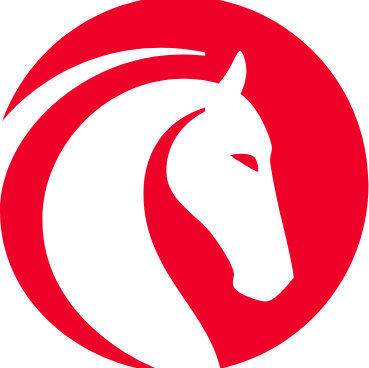
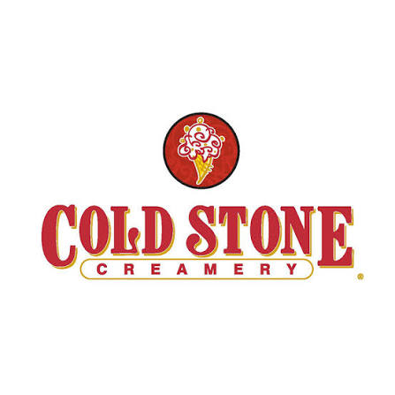
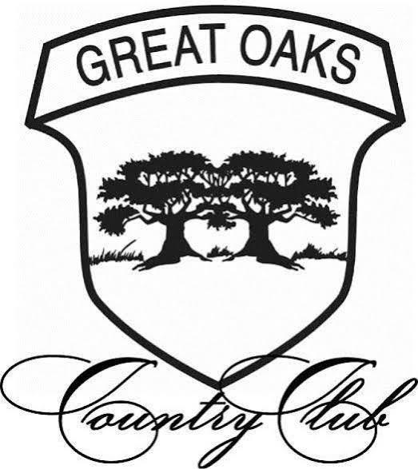

Affinity Diagram Project

Analyzed user interviews of 5 participants to make a relationship diagram


I am 22 years old born and raised in Michigan and have aspirations to work in the UI/UX world. I am a very hard worker and dedicated to my work. I have a current GPA of a 3.5 at Michigan State University and have been working at Jackson National Life Insurance on campus since I was a sophmore in college.
I have done a wide range of projects throughout my college career. This includes, designing a Personal Portfolio Website, User Research projects, and code based projects specifically in Python.
Analyzed user interviews of 5 participants to make a relationship diagram

Conducted a user interview to improve the class scheduling experience at MSU

Created a personal resume website for a class at MSU

Work as a student employee at Jackson National Life Insurance for 2 years and counting. I am now a skill leader and am on the training team for New Buisness Desktop related phone skills.

Worked as a sales associate at Cold Stone Creamery for 2 years. I have learned a lot about customer service and how to work in a fast-paced environment.

Worked as a caddy at Great Oaks for 2 years. I started when I was 13 and this was my first real job.
School: slymich1@msu.edu
Personal: mikesly8116@gmail.com
Phone: (248) 312-8116